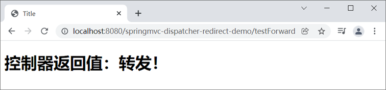
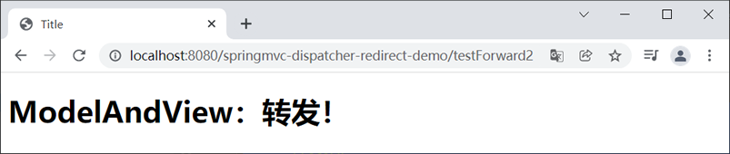
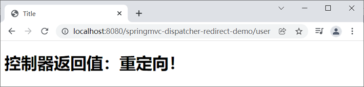
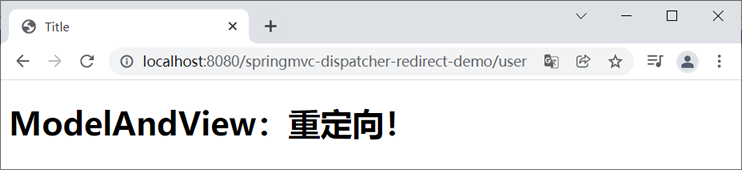

首页 > Spring MVC
Spring MVC请求转发与重定向
Spring MVC 是对 Servlet 的进一步封装，其本质就是一个 Servlet，因此在 Spring MVC 中也存在转发和重定向的概念。
在 Spring MVC 中，我们可以在逻辑视图名中通过“forward:”和“redirect:”两个关键字来表示转发和重定向。
当控制器方法中所设置的逻辑视图名称以“forward:”为前缀时，该逻辑视图名称不会被 Spring MVC 配置的视图解析器解析，而是会将前缀“forward:”去掉，以剩余部分作为最终路径通过转发的方式实现跳转。
在 Spring MVC 中，实现请求转发的最常用的方式两种，下面我们就来对它们进行介绍。
在上面的代码中，控制器方法返回的是一个字符串类型的值“forward:/login”，此时 Spring MVC 会将“forward:”识别为转发指示符，而剩余的“/login”则会被当做转发的 URL，即路径“/testDispatcher”请求最终会被转发到 “/login”上进行处理。
1. 新建一个名为 springmvc-dispatcher-redirect-demo 的 Web 项目，并将 Spring MVC 相关依赖引入到项目中，web.xml 的配置如下。
2. 在 src 下（或类路径下 resources）新建一个 springMVC.xml，其配置内容如下。
3. 在 net.biancheng.c.controller 包下，创建一个名为 ForwardController 的 Controller 类，代码如下。
4. 在 webapp/WEB-INF 下新建一个 templates 目录，并在该目录下创建一个 userPage.html，代码如下。
5. 将 springmvc-dispatcher-redirect-demo 部署到 Tomcat 中，并启动 Tomcat 服务器，然后使用浏览器访问“http://localhost:8080/springmvc-dispatcher-redirect-demo/testForward”，结果如下图。
1. 在 springmvc-dispatcher-redirect-demo 的 net.biancheng.c.controller.ForwardController 中添加以下代码。
2. 重启 Tomcat 服务器，使用浏览器访问“http://localhost:8080/springmvc-dispatcher-redirect-demo/testForward2”，结果如下图。
当控制器方法中所设置的视图名称以“redirect:”为前缀时，该视图名称不会被 Spring MVC 配置的视图解析器解析，而是会将前缀“redirect:”去掉，以剩余部分作为最终路径通过重定向的方式实现跳转。
在 Spring MVC 中，实现重定向的最常用的方式两种，下面我们就来对它们进行介绍。
1. 在 springmvc-dispatcher-redirect-demo 的 net.biancheng.c.controller 包下，创建一个名为 RedirectController 的 Controller 类，代码如下。
2. 对 userPage.html 的代码进行修改，代码如下。
3. 重启 Tomcat 服务器，使用浏览器访问“http://localhost:8080/springmvc-dispatcher-redirect-demo/testRedirect”，结果如下图。
1. 在 net.biancheng.c.contorller 包下的 RedirectController 类中添加以下代码。
2. 重启 Tomcat 服务器，使用浏览器访问“http://localhost:8080/springmvc-dispatcher-redirect-demo/testRedirect2”，代码如下。
在 Spring MVC 中，我们可以在逻辑视图名中通过“forward:”和“redirect:”两个关键字来表示转发和重定向。
请求转发
我们可以在控制器方法指定逻辑视图名（View Name）时，使用“forward:”关键字进行请求转发操作。当控制器方法中所设置的逻辑视图名称以“forward:”为前缀时，该逻辑视图名称不会被 Spring MVC 配置的视图解析器解析，而是会将前缀“forward:”去掉，以剩余部分作为最终路径通过转发的方式实现跳转。
在 Spring MVC 中，实现请求转发的最常用的方式两种，下面我们就来对它们进行介绍。
1. 通过 String 类型的返回值实现转发
我们可以通过控制方法返回的 String 字符串类型的返回值实现请求转发，示例代码如下。
@RequestMapping("/testDispatcher")
public String testDispatcher() {
return "forward:/login";
}
在上面的代码中，控制器方法返回的是一个字符串类型的值“forward:/login”，此时 Spring MVC 会将“forward:”识别为转发指示符，而剩余的“/login”则会被当做转发的 URL，即路径“/testDispatcher”请求最终会被转发到 “/login”上进行处理。
示例
下面我们就通过一个简单的实例，来演示下如何通过控制器方法的返回值进行转发处理。1. 新建一个名为 springmvc-dispatcher-redirect-demo 的 Web 项目，并将 Spring MVC 相关依赖引入到项目中，web.xml 的配置如下。
<?xml version="1.0" encoding="UTF-8"?>
<web-app xmlns:xsi="http://www.w3.org/2001/XMLSchema-instance" xmlns="http://xmlns.jcp.org/xml/ns/javaee"
xsi:schemaLocation="http://xmlns.jcp.org/xml/ns/javaee http://xmlns.jcp.org/xml/ns/javaee/web-app_4_0.xsd"
id="WebApp_ID" version="4.0">
<display-name>first-springmvc-demo</display-name>
<!--请求和响应的字符串过滤器-->
<filter>
<filter-name>CharacterEncodingFilter</filter-name>
<filter-class>org.springframework.web.filter.CharacterEncodingFilter</filter-class>
<!--设置请求的编码-->
<init-param>
<param-name>encoding</param-name>
<param-value>UTF-8</param-value>
</init-param>
<!--设置响应的编码，这里我们可以省略-->
<init-param>
<param-name>forceResponseEncoding</param-name>
<param-value>true</param-value>
</init-param>
</filter>
<filter-mapping>
<filter-name>CharacterEncodingFilter</filter-name>
<url-pattern>/*</url-pattern>
</filter-mapping>
<!-- 配置SpringMVC的前端控制器，对浏览器发送的请求统一进行处理 -->
<servlet>
<servlet-name>dispatcherServlet</servlet-name>
<servlet-class>org.springframework.web.servlet.DispatcherServlet</servlet-class>
<!--配置 DispatcherServlet 的一个初始化参数：spring mvc 配置文件按的位置和名称-->
<init-param>
<param-name>contextConfigLocation</param-name>
<param-value>classpath:springMVC.xml</param-value>
</init-param>
<load-on-startup>1</load-on-startup>
</servlet>
<servlet-mapping>
<servlet-name>dispatcherServlet</servlet-name>
<!--设置springMVC的核心控制器所能处理的请求的请求路径/所匹配的请求可以是/login或.html或.js或.css方式的请求路径但是/不能匹配.jsp请求路径的请求-->
<url-pattern>/</url-pattern>
</servlet-mapping>
</web-app>
2. 在 src 下（或类路径下 resources）新建一个 springMVC.xml，其配置内容如下。
<?xml version="1.0" encoding="UTF-8"?>
<beans xmlns="http://www.springframework.org/schema/beans"
xmlns:xsi="http://www.w3.org/2001/XMLSchema-instance"
xmlns:context="http://www.springframework.org/schema/context"
xmlns:mvc="http://www.springframework.org/schema/mvc"
xsi:schemaLocation="http://www.springframework.org/schema/beans
http://www.springframework.org/schema/beans/spring-beans.xsd
http://www.springframework.org/schema/context
https://www.springframework.org/schema/context/spring-context.xsd http://www.springframework.org/schema/mvc https://www.springframework.org/schema/mvc/spring-mvc.xsd">
<!--开启组件扫描-->
<context:component-scan base-package="net.biancheng.c"></context:component-scan>
<!-- 配置 Thymeleaf 视图解析器 -->
<bean id="viewResolver"
class="org.thymeleaf.spring5.view.ThymeleafViewResolver">
<!--视图解析器的优先级，值越小，优先级越高-->
<property name="order" value="2"/>
<!--定义视图文件的字符集-->
<property name="characterEncoding" value="UTF-8"/>
<property name="templateEngine">
<bean class="org.thymeleaf.spring5.SpringTemplateEngine">
<property name="templateResolver">
<bean class="org.thymeleaf.spring5.templateresolver.SpringResourceTemplateResolver">
<!--设置视图前缀 -->
<property name="prefix" value="/WEB-INF/templates/"/>
<!--设置视图后缀 -->
<property name="suffix" value=".html"/>
<property name="templateMode" value="HTML5"/>
<property name="characterEncoding" value="UTF-8"/>
</bean>
</property>
</bean>
</property>
</bean>
<!--视图控制器，用于页面跳转-->
<mvc:view-controller path="/user" view-name="userPage"></mvc:view-controller>
<mvc:annotation-driven/>
</beans>
3. 在 net.biancheng.c.controller 包下，创建一个名为 ForwardController 的 Controller 类，代码如下。
package net.biancheng.c.controller;
import org.springframework.stereotype.Controller;
import org.springframework.ui.Model;
import org.springframework.web.bind.annotation.RequestMapping;
/**
* @author c语言中文网
*/
@Controller
public class ForwardController {
/**
* 通过控制器方法返回值实现转发
* @param model
* @return
*/
@RequestMapping("/testForward")
public String testDispatcher(Model model) {
//通过 Model 向 request 域中添加信息
model.addAttribute("requestScope", "控制器返回值：转发！");
//通过返回值将请求转发的 /userPage 上
return "forward:/user";
}
}
4. 在 webapp/WEB-INF 下新建一个 templates 目录，并在该目录下创建一个 userPage.html，代码如下。
<!DOCTYPE html>
<html lang="en" xmlns:th="http://www.thymeleaf.org">
<head>
<meta charset="UTF-8">
<title>Title</title>
</head>
<body>
<H1 th:text="${requestScope}" th:if="${not #strings.isEmpty(requestScope)}"></H1>
</body>
</html>
5. 将 springmvc-dispatcher-redirect-demo 部署到 Tomcat 中，并启动 Tomcat 服务器，然后使用浏览器访问“http://localhost:8080/springmvc-dispatcher-redirect-demo/testForward”，结果如下图。

图1：转发-1
图1：转发-1
2. 通过 ModelAndView 实现转发
我们还可以通过 ModelAndView 实现请求转发，示例代码如下。
@RequestMapping("/testDispatcher")
public ModelAndView testDispatcher() {
ModelAndView modelAndView = new ModelAndView();
//设置逻辑视图名
modelAndView.setViewName("forward:/login");
return modelAndView;
}
示例 2
下面我们通过一个实例，演示下如何通过 ModelAndView 实现请求转发。1. 在 springmvc-dispatcher-redirect-demo 的 net.biancheng.c.controller.ForwardController 中添加以下代码。
/**
* 通过 ModeAndView 实现转发
* @return
*/
@RequestMapping("/testForward2")
public ModelAndView testForward2() {
ModelAndView modelAndView = new ModelAndView();
//设置逻辑视图名
modelAndView.setViewName("forward:/user");
//在request域对象中添加信息
modelAndView.addObject("requestScope", "ModelAndView：转发！");
return modelAndView;
}
2. 重启 Tomcat 服务器，使用浏览器访问“http://localhost:8080/springmvc-dispatcher-redirect-demo/testForward2”，结果如下图。

图2：请求转发-2
图2：请求转发-2
重定向
我们可以在控制器方法指定逻辑视图名（View Name）时，使用“redirect:”关键字进行重定向操作。当控制器方法中所设置的视图名称以“redirect:”为前缀时，该视图名称不会被 Spring MVC 配置的视图解析器解析，而是会将前缀“redirect:”去掉，以剩余部分作为最终路径通过重定向的方式实现跳转。
在 Spring MVC 中，实现重定向的最常用的方式两种，下面我们就来对它们进行介绍。
1. 通过 String 类型的返回值实现重定向
我们可以通过控制器方法返回的字符串类型的返回值实现重定向，示例代码如下。
@RequestMapping("/testRedirect")
public String testRedirect() {
return "redirect:/login";
}
示例 3
下面我们就通过一个简单的实例，来演示下如何通过控制器方法的返回值实现重定向。1. 在 springmvc-dispatcher-redirect-demo 的 net.biancheng.c.controller 包下，创建一个名为 RedirectController 的 Controller 类，代码如下。
package net.biancheng.c.controller;
import org.springframework.stereotype.Controller;
import org.springframework.web.bind.annotation.RequestMapping;
import javax.servlet.http.HttpSession;
/**
* @author c语言中文网
*/
@Controller
public class RedirectController {
/**
* 通过 String 类型的返回值实现重定向
* @param session
* @return
*/
@RequestMapping("/testRedirect")
public String testRedirect(HttpSession session) {
//向session域对象中添加信息
session.setAttribute("sessionScope", "控制器返回值：重定向！");
return "redirect:/user";
}
}
2. 对 userPage.html 的代码进行修改，代码如下。
<!DOCTYPE html>
<html lang="en" xmlns:th="http://www.thymeleaf.org">
<head>
<meta charset="UTF-8">
<title>Title</title>
</head>
<body>
<h1 th:text="${requestScope}" th:if="${not #strings.isEmpty(requestScope)}"></h1>
<h1 th:text="${session.sessionScope}" th:if="${not #strings.isEmpty(session.sessionScope)}"></h1>
</body>
</html>
3. 重启 Tomcat 服务器，使用浏览器访问“http://localhost:8080/springmvc-dispatcher-redirect-demo/testRedirect”，结果如下图。

图3：Spring MVC 实现重定向
2. 通过 ModelAndView 实现重定向
我们还可以通过 ModelAndView 实现请求转发，示例代码如下。
@RequestMapping("/testRedirect")
public ModelAndView testDispatcher() {
ModelAndView modelAndView = new ModelAndView();
//设置逻辑视图名
modelAndView.setViewName("redirect:/login");
return modelAndView;
}
示例 4
下面我们通过一个简单的实例，来演示下如何通过 ModelAndView 实现重定向。1. 在 net.biancheng.c.contorller 包下的 RedirectController 类中添加以下代码。
/**
* 通过 ModelAndView 实现重定向
* @param session
* @return
*/
@RequestMapping("/testRedirect2")
public ModelAndView testRedirect2(HttpSession session) {
ModelAndView modelAndView = new ModelAndView();
//设置逻辑视图名
modelAndView.setViewName("redirect:/user");
session.setAttribute("sessionScope", "ModelAndView：重定向！");
return modelAndView;
}
2. 重启 Tomcat 服务器，使用浏览器访问“http://localhost:8080/springmvc-dispatcher-redirect-demo/testRedirect2”，代码如下。

图4：Spring MVC 实现重定向-2
图4：Spring MVC 实现重定向-2
关注公众号「站长严长生」，在手机上阅读所有教程，随时随地都能学习。内含一款搜索神器，免费下载全网书籍和视频。

微信扫码关注公众号